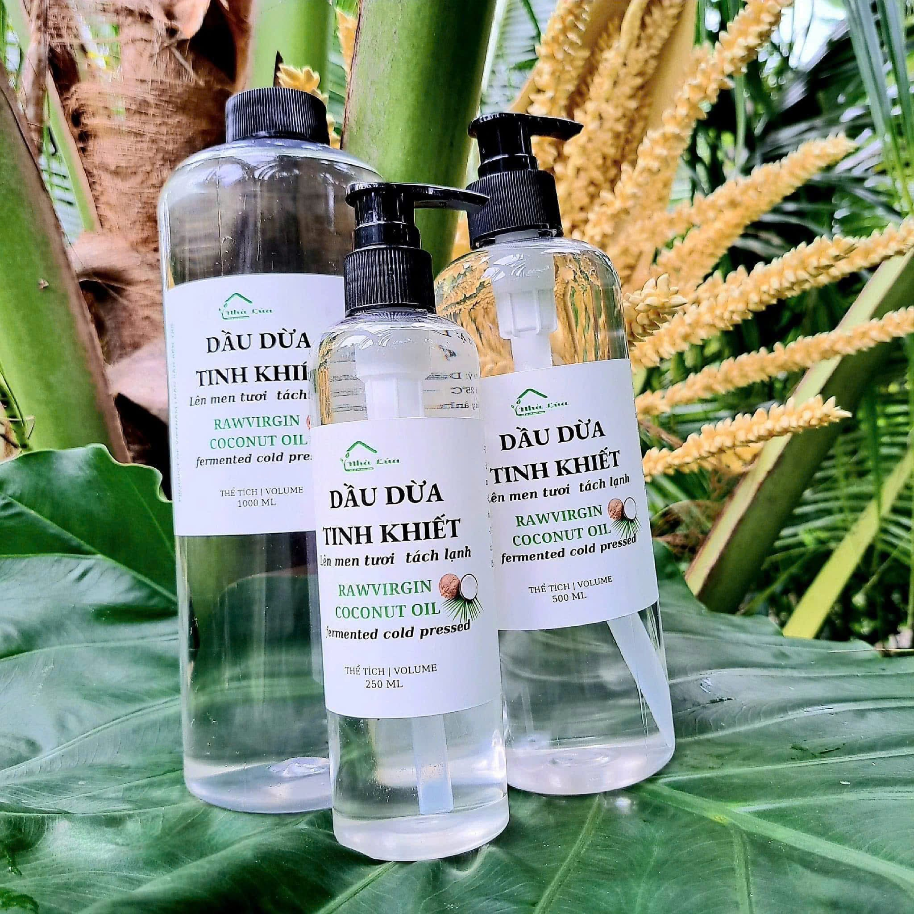

Bảo quản
nơi thoáng mát. Đặt hàng: 0987931551 - 0398767885 #daudua #suckhoe #chatbeotot #thucpham #healthy
Trang này là thông tin sản phẩm. Nội dung được chép từ mô tả của nhà sản xuất hoặc nhà phân phối, không nhằm chẩn đoán hay điều trị bệnh.

🌿 Một phương pháp sản xuất dầu dừa giữ được nhiều chất dinh dưỡng từ việc lên men, tách lạnh sữa dừa tươi (nước cốt dừa), không tác động nhiệt. 🌿 Ngoài loại dầu dừa gia nhiệt thì đây là loại dầu có phương pháp sản xuất KHÁC BIỆT so với phương pháp ép từ cơm dừa sấy khô hoặc sấy lạnh (dừa lúc này sẽ mất một lượng vi c
nơi thoáng mát. Đặt hàng: 0987931551 - 0398767885 #daudua #suckhoe #chatbeotot #thucpham #healthy